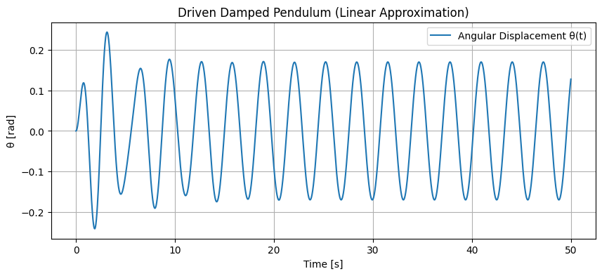
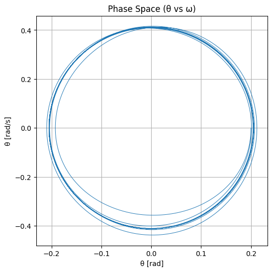
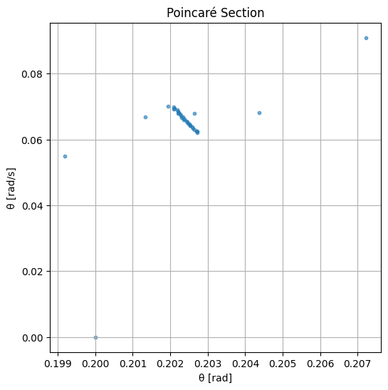

1. Theoretical Foundation
The motion of a forced damped pendulum is governed by the nonlinear second-order differential equation:
Where:
- \(\theta(t)\) is the angular displacement
- \(b\) is the damping coefficient
- \(g\) is the gravitational acceleration
- \(L\) is the length of the pendulum
- \(A\) is the amplitude of the external periodic driving force
- \(\omega\) is the driving frequency
Small-Angle Approximation
For small angles (\(|\theta| \ll 1\)), we use the approximation \(\sin\theta \approx \theta\). The equation becomes:
This is a linear nonhomogeneous ordinary differential equation, describing a driven damped harmonic oscillator. Its general solution consists of:
- A transient component (decays over time due to damping)
- A steady-state oscillation at the driving frequency
Resonance Conditions
Resonance occurs when the driving frequency \(\omega\) is close to the natural frequency of the pendulum:
In this case, the amplitude of steady-state oscillations is maximized. Damping reduces the resonance peak and broadens the response curve. At very high damping, resonance may be suppressed.
2. Analysis of Dynamics
Influence of Parameters
Damping coefficient \(b\):
- Low damping: Oscillations persist longer; resonance more pronounced.
- High damping: Oscillations die out quickly; motion becomes sluggish.
Driving amplitude \(A\):
- Small \(A\): Motion remains close to linear, predictable behavior.
- Large \(A\): Nonlinearity dominates; complex and chaotic dynamics emerge.
Driving frequency \(\omega\):
- Close to \(\omega_0\): Resonance occurs.
- Far from \(\omega_0\): Forced motion with smaller amplitude.
Transition to Chaos
When nonlinearity (due to large \(\theta\)) and driving are significant, the system can exhibit chaotic behavior—sensitive to initial conditions, aperiodic, and non-repeating. This transition is often studied using:
- Phase portraits: Plots of \(\theta\) vs. \(\dot{\theta}\), showing the system's trajectory in state space.
- Poincaré sections: Cross-sections of the phase space at intervals of the driving period to reveal periodic or chaotic structure.
- Bifurcation diagrams: Show how qualitative behavior changes as a parameter (e.g., \(A\)) varies.
3. Practical Applications
The forced damped pendulum serves as a model for various real-world systems:
Mechanical Systems:
- Suspension bridges (e.g., Tacoma Narrows collapse) experience driven oscillations under wind.
- Vibration absorbers and shock absorbers use damping principles to control motion.
Electrical Circuits:
- Driven RLC circuits behave identically to damped driven pendulums—capacitor voltage acts as \(\theta\), inductor resistance as damping.
Biomechanics:
- Human gait and limb motion can resemble pendulum-like oscillations, especially under periodic driving (e.g., treadmill walking).
Energy Harvesting:
- Pendulum-based devices can extract energy from periodic motion, such as wave or vibration energy.
4. Implementation Overview
Simulations and visualizations reveal insights into this system’s behavior:
- Time series show regular, resonant, or chaotic oscillations.
- Phase diagrams illustrate fixed points, limit cycles, or strange attractors.
- Poincaré sections provide snapshots of system states, highlighting transitions to chaos.
- Bifurcation diagrams display how solutions change as parameters like \(A\) or \(\omega\) are varied.
Limitations and Extensions
Limitations
- Sinusoidal forcing and linear damping may oversimplify real systems.
- Small-angle approximation only valid for minor displacements.
- No environmental noise or non-periodic forcing considered.
Potential Extensions
- Nonlinear damping: Model air resistance or material-specific behavior.
- Stochastic driving: Incorporate noise to study robustness and real-world applicability.
- Coupled pendulums: Model complex systems like clocks, power grids, or neural oscillators.
This comprehensive investigation into the forced damped pendulum combines physics theory, system analysis, and real-world relevance, making it a cornerstone in the study of nonlinear and chaotic dynamics. ```


